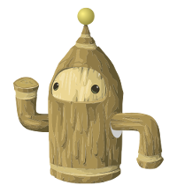
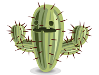
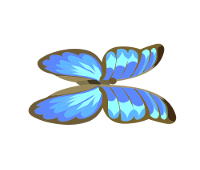
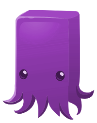

You can see a door and the Greeterbot Sentry G-42 here.
The patented Greeterbot Sentry G-42 does mainly what it said on the oversized Greeterbot Sentry G-42 box - greets, stands sentry (to the fragile world of the Ghost of Gwendolyn) and charges admission for things he will never get to experience for himself. A sad, but worthwhile, life.
"'Well met, adventurer. I am Greeterbot Sentry G-42. I sense you're ready for what is about to be revealed."
"I am not the one to reveal it though. Proceed upstairs. The Ghost of Gwendolyn is waiting to speak to you."
"Ghost?"
"Yes, Ghost. My mistress will tell you that story herself."
"This way; follow me."
This room is pitch-black, save for the glowing ghost of Gwendolyn herself.
The ethereal manifestation of one of the ancients that used to inhabit Ur, long before the Glitchen arrived. She claims to be a disciple of Cosma, who died when the age of Grendaline overtook the world with a great flood. But who can tell? Ghosts are notoriously inconsistent.
"Hear me. I am Gwendolyn, disciple of Cosma, daughter of Egeria, drowned as I lived in the waters of Grendaline's Rising."
"I have watched the giants battle and build, the worlds consume each other, imaginations turned inside out, and generations disappear beneath the layers."
"So long we searched for Cosma – lying in the gutter, gazing at the stars, watching the wind, waiting for her instruction…"
"…so long we lay, so long we gazed, we never noticed the coming of the age of Grendaline, lapping at our heels, washing over our faces."
"Learn from our mistakes, I beg you. You must not lose yourself to the world, but find yourself within it. You must learn a measure of mastery over your own mind."
"If you are ready, I will send you on a journey where you can learn to avoid the fate of my people. Are you ready?"
"Kind of."
You have been transported to the desert. The dry heat immediately overwhelms you and feel your mood take a turn for the worse.
You see a cactus and a butterfly.
Hidden away in a scorching place, the Cactus has seen things he can never unsee. You can try to help, but help is limited. Do not, whatever you do, consider hugging the cactus.
The butterfly falls out of the sky.
A blue butterfly, wilted from the heat. This one won't be producing milk ever again.
The cactus says, "Ack! Pfft! Get it OFF ME it’s BURNY!"
"TAKE the AIR away. Suck it out. Suck it out & blow it into the North … the northwest. Mybialded. Mebber. … ACK!"
"SUCK IT AWAY AND TAKE IT AWAY. Put it in the bubbles and take it to someone who needs to know what burning is. I know too well already."
"Tii boiled down the sky and poured it into the caves, and the caves spat it out into the air, and the air has come here to punish me. It’s BURNY. Make it STOP."
Suddenly you hear a voice say, "That cactus is CrAzY! Hee hee!" The speaker appears to be a blue paper bag with tentacles. You suppose it might be a squid of some sort. The heat is obviously beginning to get to you.
"It is damn hot out, though."
A creature as mysterious as it is legless, Zzybzfrx knows what you have seen, and where you have been, and will never tell a soul.
"Don't worry," it tells you. "This is how vision quests always start."
"It might be scary for you here."
"It's cool, though."
The squid pauses to study you. "Seriously. It's cool. It's cool. Everything's cool."
Poof. For a moment you could have sworn the heat had dropped. You let out a soft "Ahh..." And then the dry, oppressing heat is back, just as quickly as it disappeared.
The squid continues to talk, "I'm telling you, everything will be cool. It will all BE cool, if you just learn to step into your own head and shut all of this out."
As the squid talks, you feel the temperature fluxuating between impossibly hot and perfectly comfortable. He gestures at your forehead with a short, writhing tentacle. He says, "It's all cool in there. Are you ready to meet your mind?"
"Just get me out of here."
"Coooooooooool..."
"Cool."
You are in a room that is as psychadelic as it is oddly comforting. The walls are a kaledioscope of pink and orange. Two giant disembodied eyeballs float upon you, and the floor you walk on appears to be a pink tongue, ramping up towards a third eyeball.
You hear a loud voice: "TRAVELLER: EXAMINE THE PATH. WALK THE PATH WITH HEART. THE ONLY WORTHWHILE CHALLENGE IS TO TRAVERSE THE FULL LENGTH."
"BE AWARE, THIS IS YOUR OWN MIND. DO NOT LITTER. PLEASE LEAVE IT AS YOU WOULD WISH TO FIND IT. YOUR NEAREST EXIT MAY BE ABOVE YOU."
"THE ONES WHO CAME BEFORE YOU DID NOT HAVE WHAT YOU HAVE. THEY DID NOT KNOW WHAT YOU KNOW."
"KNOWLEDGE IS YOUR RAFT. YOUR PATH IS YOUR OWN. DO NOT GO BACK. DO NOT PASS GO. BE IN YOUR MIND ALWAYS. EVEN WHEN YOU ARE WITHOUT IT."
As you approach the third eyeball, the squid reappears, but now it is purple. "Hee hee! Neat! C'mere!", it says.
"See. Zzybzfrx told you it would be cool, and cool it is."
"I. Zzybzfrx. No one knows where I am really from, or who I am for certain. But know this: you have reached the apex of your brain."
"You've been to paradise. And you've also been to you. I told you it was cool, right?"
"Damn right. Never say Zzybzfrx doesn't take you where the cool kids go. One more challenge lies before you. Complete it, and I will have no problem awarding you a Measure of Self-Mastery. You can do it?"
"I can do it."
"Then let's do it."
This room is full of colorful shapes. The floor is white and quite possibly the shiniest thing you have ever seen.
This room is pitch-black, save for the glowing ghost of Gwendolyn herself.
"This is not the end. You have completed today's challenge, and must be on your way, but your self-knowledge is only begun. You may not see Zzybzfrx, that friendly Figment, but he will be there."
"I too am always here, somewhere. Remember me, and heed my warning – do not follow the ways of those who have gone before. You will make your own path."
"As for me, I will return one day, to tell you of my beautiful, lost-so-long, Butterfly-Bone Hair Clip. For now, take my warnings, and my blessing."